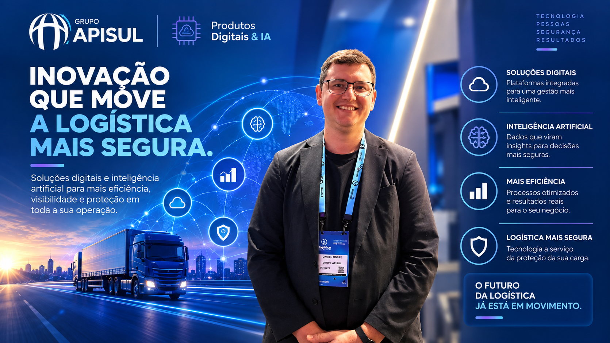

Uma câmera embarcada consegue ver um olho fechado. O que ela não consegue é dizer se aquilo é sono, ofuscamento de farol ou uma piscada comum. Foi esse limite de processamento que levou a Apisul a tirar a inteligência artificial de dentro do caminhão e colocá-la na nuvem.
A nossa vertical de tecnologia é dividida em três pilares: infraestrutura interna, produtos digitais e o Centro de Pesquisa e Inovação. Nossa função é antecipar tendências de mercado.
A plataforma que sustenta essa operação, a Apisul Integra, existe desde 2006. Duas décadas de desenvolvimento contínuo e integração nativa com mais de dez tecnologias de rastreamento do mercado.
Um supercomputador olhando cinco câmeras ao mesmo tempo
Enquanto o hardware embarcado no caminhão processa recortes isolados (cinto, olho fechado, celular na mão), a nuvem faz outra conta.
Um supercomputador processa até cinco câmeras simultâneas em menos de vinte segundos, avaliando o semblante do motorista e elementos da rodovia, como leitura de placas de velocidade.
A diferença não é só velocidade. É contexto.
A foto engana, o filme não
Uma frenagem brusca isolada pode ser uma manobra defensiva legítima. O problema aparece quando ela se repete dentro de um padrão.
O sistema não analisa apenas um segundo isolado de imagem. Ele cruza o vídeo com os dados telemáticos da viagem dos últimos trinta minutos: velocidade, aceleração lateral, frenagens bruscas, jornada e histórico. Uma frenagem isolada pode ser uma manobra defensiva legítima; porém, se combinada a excesso de velocidade e uso de celular minutos antes, o risco é classificado no nível máximo.
É essa combinação de eventos, e não um evento isolado, que decide se o alerta sobe para um operador humano ou não.
Quando o alerta vira ligação telefônica
A última peça dessa arquitetura é o Bino, um agente de voz que liga para o motorista ou para o transportador quando algo precisa ser tratado.
O Bino realiza chamadas telefônicas automatizadas em linguagem natural diretamente para motoristas ou transportadores para tratar alertas de fadiga, paradas não informadas ou desvios de conduta. O Bino já está em operação ativa na central da Apisul tratando eventos de rotina e liberando a equipe humana para atendimentos de alta complexidade.
A lógica é dividir o trabalho por complexidade. O que é rotina, a máquina resolve. O que exige julgamento, vai para uma pessoa.
Raio-X: Apisul Produtos Digitais & IA
- O que é?
- O centro de tecnologia e inovação do Grupo Apisul, responsável pela plataforma Apisul Integra e pelos modelos de IA para vídeo e voz.
- Qual problema resolve?
- Câmeras embarcadas processam apenas recortes isolados. A nuvem cruza vídeo com telemetria e histórico para entender o contexto real da viagem.
- Qual a principal inovação?
- O Bino, agente de voz por IA que liga automaticamente para motoristas e transportadores para tratar alertas de rotina.
- Para onde vai?
- Agentes de IA atuando de forma preditiva, orientando o condutor antes que o risco vire acidente.